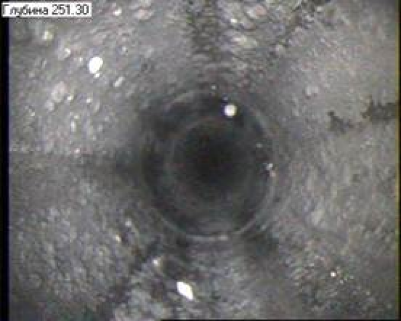
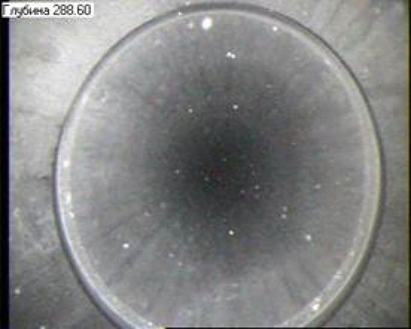
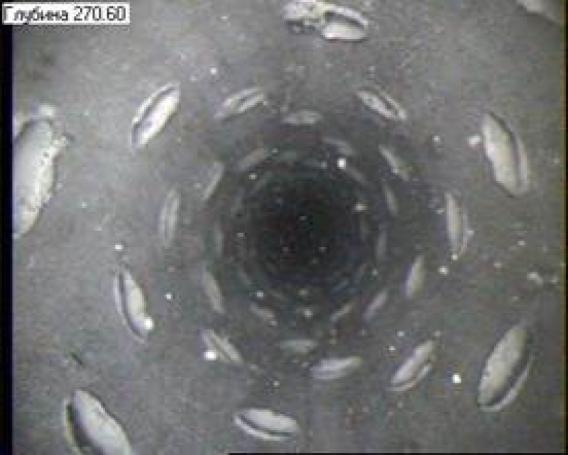
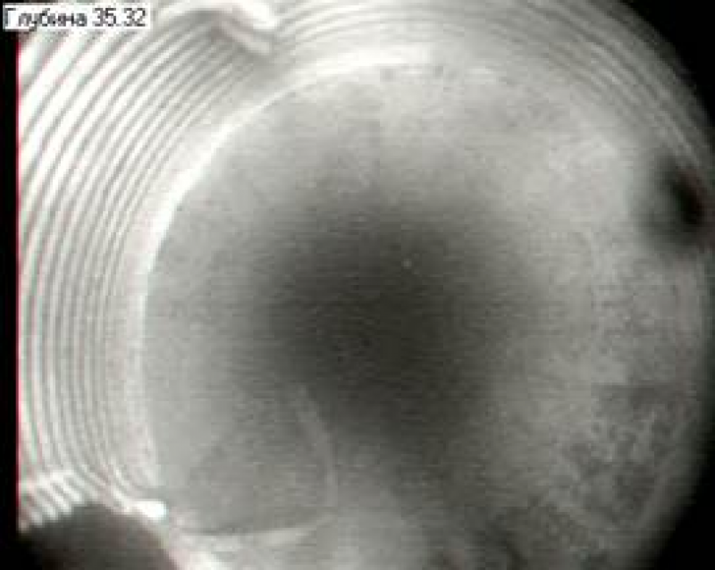

Прибор визуального контроля состояния скважин « КП-410ВК2»
Назначение
Прибор визуального контроля «КП410ВК2»предназначен для визуальной контроля технического состояния эксплуатационных колонн, фильтров нагнетательных скважин и области забоя скважин.
Основное достоинство прибора: видеосъемка позволяет реально обследовать и оценить техническое состояние вновь построенных и эксплуатируемых скважин.
При длительной эксплуатации скважины могут проявляться скрытые дефекты, не выявляемые при кратковременном опробовании скважины перед сдачей в эксплуатацию.
Перечень дефектов, обнаруживаемых видеосъемкой в процессе сдачи и эксплуатации скважины:
- смятие труб, трещины в колонне;
- отсутствие сальника между эксплутационной и фильтровой колоннами;
- деформация надфильтровой трубы;
- наличие песчаной пробки и зернистость материала;
- наличие заусенцев во внутренней части труб;
- наличие недоворота муфтовых соединений;
- качество сварных швов.
Для предприятий, выполняющих сооружение и ремонт скважин, предлагаем кадры видеоизображения исследованных скважин:




Технические характеристики
- Прибор оснащен цифровой телеметрической системой “МАНЧЕСТЕР-2”.
- Прибор работает через стандартный одножильный геофизический кабель длиной до 4000м.
- Прибор имеет видеоголовку с видеокамерой цветного изображения .
- Быстродействие прибора обеспечивает проведение измерений со скоростью до 200 м/ч при шаге квантования по глубине, равном 10 см.
- Максимальная сила света системы освещения не менее 90 кД, степень освещенности объекта регулируется посредством изменения тока светодиодов.
- С наземного регистратора могут быть заданы уровень освещения, степень сжатия видеосигнала и частота передачи данных.
- Прибор оснащен съемными центраторами, обеспечивающих исследование скважин с диаметром 52…210мм.
- Условия работы прибора:
- рабочая температура окружающей среды - минус 10….+60 °С,
- наибольшее гидростатическое давление - 25 МПа.
- Время непрерывной работы в условиях предельной температуры - 1 ч. - Напряжение постоянного тока питания прибора
(режим стабилизации напряжения) - (150 +/-10) В.
- Габаритные размеры прибора, мм:
- диаметр по охранному кожуху - 52,
- длина - 1400.
- Масса прибора, кг - 10.
Программное обеспечение, поставляемое с прибором «КП410ВК2», позволяет
- проводить регистрацию данных, поступающих с прибора, в цифровом виде на персональный компьютер с одновременной визуализацией на экране монитора.
- управлять режимами работы прибора.
- проводить привязку изображения к глубине с точностью не хуже +/- 0.1м;
- осуществлять просмотр видеоизображения с возможностью сохранения отдельных кадров в формате *.bmp
Прибор внедрен на предприятиях Федерального агенства по атомной энергии с 2007 г.
Прибор имеет Декларацию о соответствии ЕВРОАЗИАТСКИЙ ЭКОНОМИЧЕСКИЙ СОЮЗ ЕАЭС N RU Д-RU/АБ88.В.01571/19
Разработчик – изготовитель: ООО «АСУ-ЭКСПЕРТ»,
634061, г. Томск, ул. Красноармейская, д. 51/1, оф.1
Зам. директора по геофизической аппаратуре Журиков С. А. моб. +7 913-820-4176; т/факс (382-2) 52-37-02
E-mail: GurikovSA@asu-expert.ru